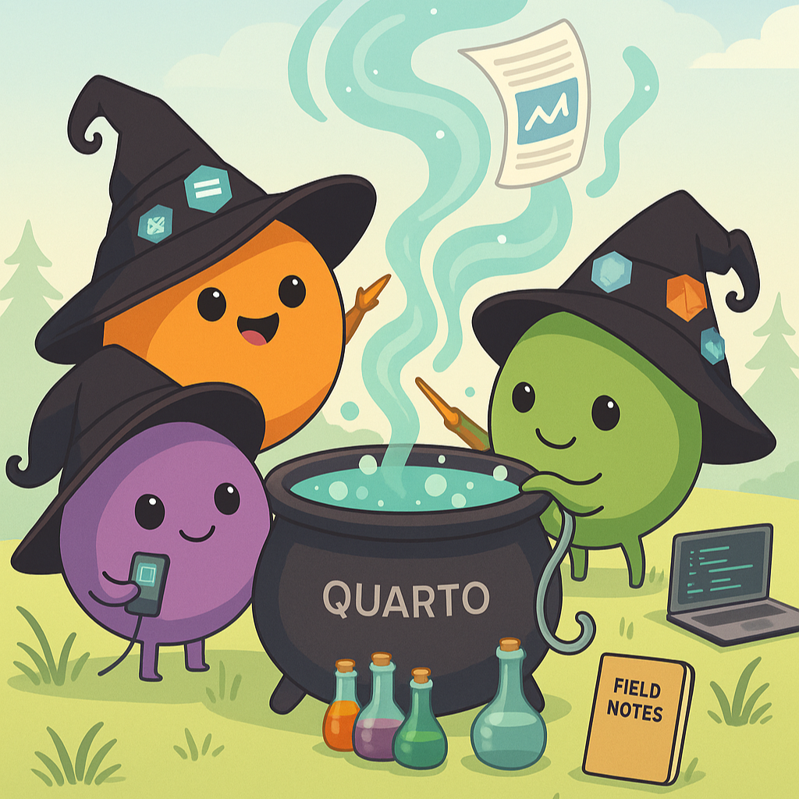
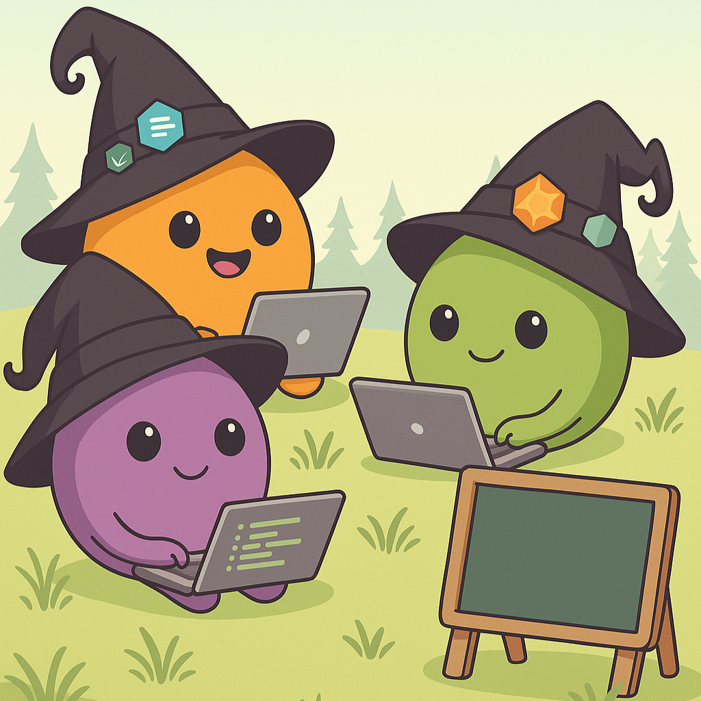

05:00


Quarto Websites
Create and publish your first website
Harsha Halgamuwe Hewage, Data Lab for Social Good Research Group, Cardiff University, UK
2025-11-12Image generated using GPT-5 Thinking Mini
Outline

Connect R Studio with GIT
Lets build the home page
How to style your website
Pages and listings
Lets publish your website
Image generated using 04-mini-high
Assumptions
You are expected to be comfortable with R and Git.
Have used Quarto to generate documents (e.g. HTML, PDF, MS Word etc.)
Are comfortable editing plain text documents (e.g
.qmd) in your IDE (e.g. RStudio, Visual Studio Code etc.)Want to walk away with your own personal website.
We won’t assume you have any HTML, CSS/SCSS or Git/GitHub experience.
What we will cover?
- Create the home page
- Simple styling such as font, colour, size
- Listing and navigation
What we will not cover
- Advance styling using
cssandscss - Advance navigation options
- Customise templates
- Run code blocks
Materials
You can find the workshop materials https://chamara7h.github.io/lab/ or simply scan the QR code.
Note: These materials are based on my learnings at;
Posit PBC: Quarto websites video series.
Introduction to Git and GitHub for R Users by Nicola Rennie.
Publish a Quarto project using GitHub Pages by Melissa Van Bussel.
Connect R Studio with GIT
Using Git and GitHub with RStudio
What you need:
R, RStudio, and Git installed on your laptop
A GitHub account
GitHub credentials
Optional (but strongly recommended):
The usethis R package
Lets setup Git in R Studio - Live demo
Terminal
# check git is installed
git --versionThen,
R script
# from R: configure git (usethis)
library(usethis)
use_git_config(
user.name = "your-username",
user.email = "you@example.org"
)
# create a GitHub personal access token (opens browser)
create_github_token()
# store credentials locally (prompts for token paste)
library(gitcreds)
gitcreds_set()Now it is your turn.

Create a GitHub account if you don’t already have one, and make sure you have Git installed on your laptop.
Install and load the
usethisandgitcredspackages.Configure git then run
create_github_token(), and follow the instructions to generate a token.Run
gitcreds_set()and paste in the token when prompted.
Image generated using 04-mini-high
Lets build the home page…
Start with a template
Start somewhere logical:
Terminal
cd ~/DocumentsOR
Terminal
cd /d/GITGet the website template:
Terminal
quarto use template chamara7h/quarto_website_templateFollow the prompts:
Terminal
Quarto templates may execute code when documents are rendered. If you do not
trust the authors of the template, we recommend that you do not install or
use the template.
? Do you trust the authors of this template (Y/n) › Y
? Create a subdirectory for template? (Y/n) › Y
? Directory name: › websiteNow it is your turn.
Get the starter template.
Open
index.qmdPreview
index.qmd
Image generated using 04-mini-high
02:00
Home page structure
index.qmd
---
title: "Bruce Wayne"
subtitle: "I am Batman"
image: profile.jpg
about: # https://quarto.org/docs/websites/website-about.html
template: jolla
links:
- icon: github
text: Github
href: https://github.com
- icon: linkedin
text: LinkedIn
href: https://linkedin.com
---
A little bit about me and my life.
## Education
University of XYZ, City \| Location \| Sept 20XX - June 20XX
## Experience
Workplace \| Job title \| April 20XX - presentWebpages are like any other Quarto document:
- Start with a YAML header
- Can include code cells
- Everything else is markdown content
About key in YAML
Landing/ home page controlled by the
aboutkey in YAML.Content and YAML values are combined using a template:
---
about: # https://quarto.org/docs/websites/website-about.html
template: jolla
links:
- icon: github
text: Github
href: https://github.com
- icon: linkedin
text: LinkedIn
href: https://linkedin.com
---Different templates: jolla, trestles, solana, marquee, or broadside
How to set the image
Used in about template, and social cards.
index.qmd
---
image: images/profile.jpg
about: # https://quarto.org/docs/websites/website-about.html
template: jolla
image-shape: round
---website/
├── _quarto.yml
├── images/
│ └── profile.jpg
└── index.qmdUse a path relative to index.qmd
Image shapes: rectangle, round and rounded
Now it is your turn.
Edit the content in
index.qmdto reflect you.Try different templates and pick one.
Edit the links to point at your own profiles, or add different links.
Replace the image with your image.
Experiment with
image-shape.
Image generated using 04-mini-high
05:00
How to style your website
Understand the website structure
A minimal website has two files: index.qmd and _quarto.yml
index.qmd: Renders toindex.html, your home page._quarto.yml: Controls project and website properties.
When rendered you will get a _site/ folder. This contains everything needed to serve the site.
Styling using YAML
With Quarto html output we have a number of ways to style the site.
A number of basic options allows us to change
colors,fonts, andSIZES.
Colours
fontcolor: The main color for text on the sitelinkcolor: Color of the linksbackgroundcolor: Background color of the whole sitemonobackgroundcolor: background for code chunks
_quarto.yml
---
format:
html:
backgroundcolor: "#eeffee"
fontcolor: "darkgreen"
linkcolor: "black"
---Need more colours: Figma colour pallet
Styling using YAML
With Quarto html output we have a number of ways to style the site.
A number of basic options allows us to change
colors,fonts, andSIZES.
Fonts
mainfont: The main font for text on the sitemonofont: Font for code elements
_quarto.yml
---
format:
html:
backgroundcolor: "#eeffee"
fontcolor: "darkgreen"
linkcolor: "black"
mainfont: "monospace"
---generic families include; serif, sans-serif, monospace, cursive, fantasy, system-ui, ui-serif, ui-sans-serif, ui-monospace, ui-rounded, and fangsong.
Styling using YAML
With Quarto html output we have a number of ways to style the site.
A number of basic options allows us to change
colors,fonts, andSIZES.
Sizes
max-width: Width of the main text area of the pagesfontsize: Base font size for websitelinestretch: Distance between lines of text
_quarto.yml
---
format:
html:
backgroundcolor: "#eeffee"
fontcolor: "darkgreen"
linkcolor: "black"
mainfont: "monospace"
fontsize: 20px
---Remember!!! You can always do further styling using custom styles in CSS.
Now it is your turn.
Open up your
_quarto.ymlfile and experiment with the colors.Open up your
_quarto.ymlfile and experiment with the fonts.Open up your
_quarto.ymlfile and experiment with the sizing.
Image generated using 04-mini-high
05:00
Lets add pages
Adding Pages
Two decisions:
Structure Where will it live in your website project?
Navigation How will people discover it on your website?
index.html is special
File location
index.qmd
talks/index.qmd
URL
{ site url }
{ site url }/talks
index.qmd (or .md, or .ipynb) -> index.html
index.html acts like a default page for the site or directory.
You aren’t limited to .html. We can also use other file types as
.csv.
Now it is your turn.
Customize your navigation bar
titleExperiment with the position of your links in the navbar:
left,rightor amixAdd at least one item to
toolsin your navbarTry both
top navigationandside navigation
Image generated using 04-mini-high
05:00
Break
Ctrl+Alt+Coffee ☕ — reboot in 10 mins.
Image generated using 04-mini-high
10:00
Listings…
What is listing and why we need it?
What?
- an automatically generated list of content
- styled via a template, (built-in
type, or customtemplate) - can be included on any page
Why?
- Great for large collections
- Great for collections that grow

Lets create lisitng for blog page
blog/ has some folders with documents in them
Demo:
Make a new page
blog/index.qmdMake it a listing:
As simple as:
---
title: My Blog
listing: default
---Explicit default options:
---
title: My Blog
listing:
contents: /
type: default
---Explore more listing types; default, grid or table
Now it is your turn.
(Repeat) Make a new page
blog/index.qmdwhich is a listingExperiment with
type:default,gridortable
Image generated using 04-mini-high
05:00
More options in listings
Use listings for projects page
Note:
contentscan be a YAML file
projects/index.qmd
---
title: Projects
listing:
contents: projects.yml
type: grid
max-description-length: 250
---project/projects.yml
- title: Predicting House Prices with Machine Learning
path: https://example.com/house-prices
# Photo by Breno Assis on Unsplash https://unsplash.com/photos/aerial-photography-of-rural-r3WAWU5Fi5Q
image: images/breno-assis-r3WAWU5Fi5Q-unsplash.jpg
description: >
This project involves using machine learning algorithms to predict house prices based on
various features such as location, size, and amenities. It includes data cleaning,
feature engineering, and model selection.
categories: [Python, Machine Learning, Data Cleaning]
date: 2024-01-01
...Path can be a relative path to a file in your site, or a URL
You can use Listing Fields, or create custom ones.
Simple customizations
Sort and filtering options
projects/index.qmd
---
title: Projects
listing:
contents: projects.yml
type: grid
max-description-length: 250
sort-ui: false
sort: date desc
filter-ui: true
---Use field-display-names to provide a different label for a field
projects/index.qmd
---
title: Projects
listing:
contents: projects.yml
type: grid
max-description-length: 250
sort-ui: false
sort: date desc
filter-ui: true
fields: [title, description, categories]
field-display-names:
title: 'Project'
categories: 'Skills'
---YMAL keys for a blog or project file
Lets open blog/third-post/index.qmd
As simple as:
---
title: "Second Post"
description: "Post description for second post"
author: "Bruce Wayne"
date: "5/23/2021"
---Add categories and a cover image
---
title: "Second Post"
description: "Talk"
author: "Bruce Wayne"
date: "5/23/2021"
image: "cover.jpg"
categories:
- Forecasting
- Healthcare
- R
- Python
- Machine Learning
link-external-newwindow: true
---Now it is your turn.
Test different customisations in
listingEdit and customise
ymlin one of yourblogpostsAdd all the pages to your site navigation
Image generated using 04-mini-high
10:00
Lets publish your website
Create a new Quarto project
In RStudio, go to
File > New Project > New Directory > Quarto Website.For the directory name, use the URL you want for your website.
If it’s a personal site, use the format your-username.github.io. For example, if your username is “
batman”, the directory name would bebatman.github.io.If the site is for a GitHub organization, use the format organization-name.github.io.
Choose a location on your computer to save the project.
Ensure that “
Create a git repository” and “Use renv with this project” are both checked.Click “
Create Project”.
Create a GitHub repository
Go to GitHub and create a new repository.
The repository name must exactly match the directory name you created in RStudio (e.g., your-username.github.io).
For free accounts, you must set the repository to Public for GitHub Pages to work.
Click “
Create repository”.Link your
local project folderto thenew GitHub repositoryand push the initial files.
Terminal/ Bash
# push an exisitng repo
git remote add origin https://github.com/<your user name>.github.io
git branch -M main
# push your initial changes
git status
git add .
git commit -m 'initial commit'
git push origin mainCreate a gh-pages Branch
After pushing your project, go to your repository on GitHub.
Click on the branch dropdown menu (which should say “
main”) and select “View all branches”.Click “
New branch”.Name the new branch
gh-pagesand click “Create new branch”.
Set up the GitHub actions workflow
In your RStudio project, create a new folder named
.github.Inside the
.github folder, create another folder namedworkflows.Inside the
workflows folder, create a new text file and name itpublish.yml.Go to the Quarto documentation page about publishing to GitHub Pages. Find the example for a GitHub Action that uses renv (go here: https://quarto.org/docs/publishing/github-pages.html#example-knitr-with-renv).
Copy the entire code block from that example.
Paste this code into your publish.yml file and save it and commit changes.
Configure GitHub pages settings
On your GitHub repository page, go to
Settingsand then clickPagesin the side menu.Under the “
Branch” section, use the dropdown menu to select thegh-pagesbranch as the source.Click
Save.Click on the
Actionstab at the top of your GitHub repository page.ou will see that your recent commit has automatically started the workflow.
Once the action is complete, go back to
Settings > Pages.Click the “
Visit site” button to see your live website at the URL you specified.
Now it is your turn.
Create the
quarto website projectfolderCreate
Github repoLink your
local folderwith theGithub repoCreate the
workflowPublish your
website
Image generated using 04-mini-high
07:30
Congratulations…
You have a website!
🎉🥳🎉
Resources to keep learning
Any questions or thoughts? 💬